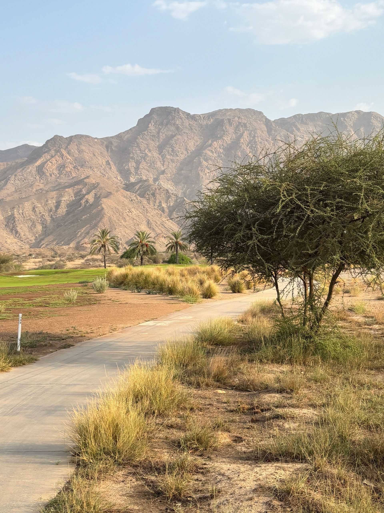
The work speaks first
Transformations and finished styles from the Red Agave playbook: desert conversions, paver patios, turf, and full landscape builds across the Phoenix metro.
Before and after
Representative transformations in the styles we build every week. Real Red Agave project pairs are added to this page as client photography arrives at launch.
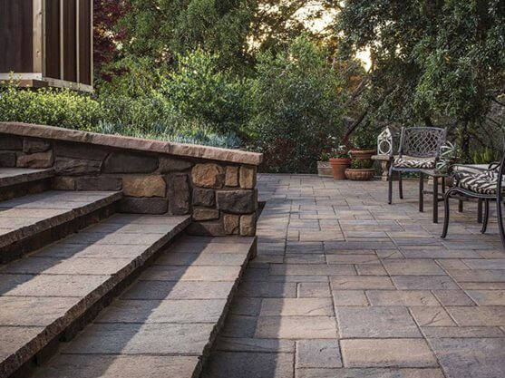
BEFORE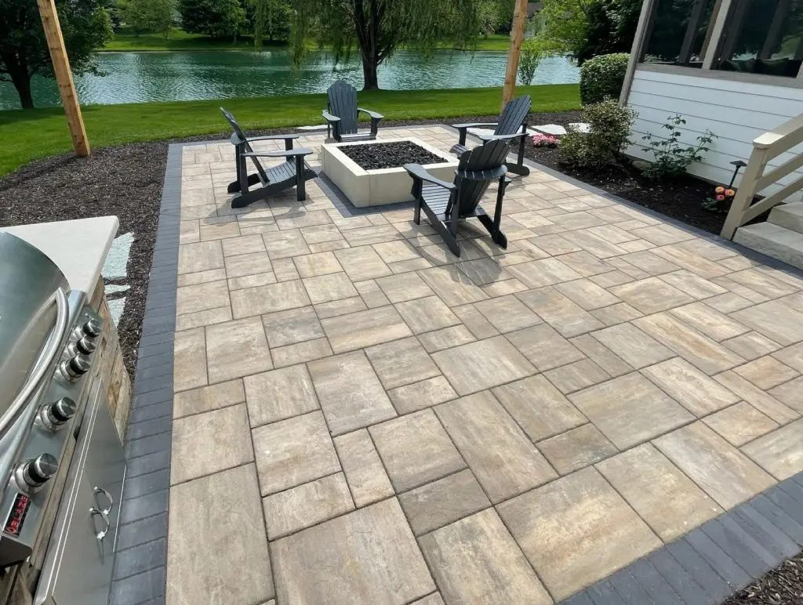
AFTERPaver patio rebuild: dated stone replaced with a finished outdoor room.
 BEFORE
BEFORE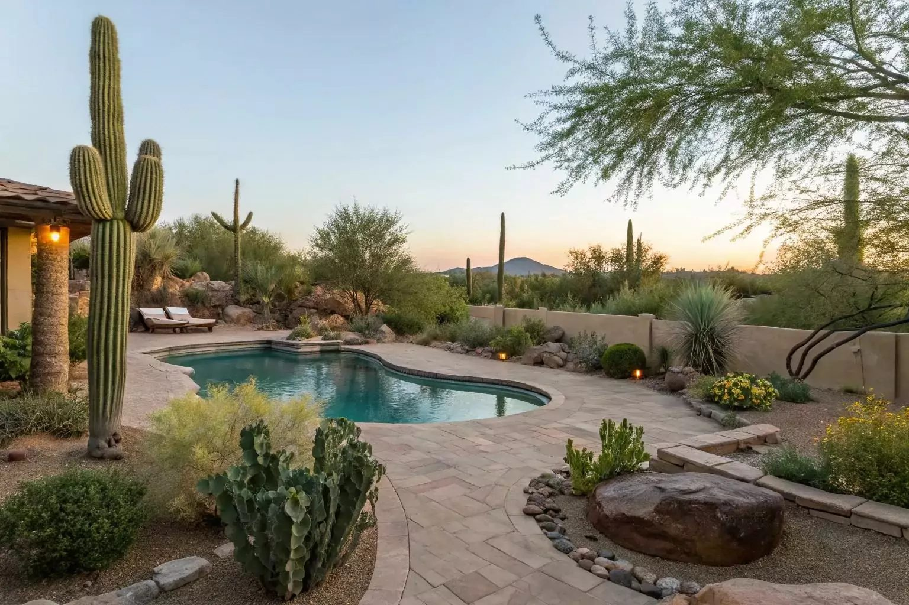
AFTERDesert conversion, grown in: structured planting that matures into shade and color.
Styles we build
Every project is designed for its house and its owners. These are the looks Phoenix homeowners ask us for most.
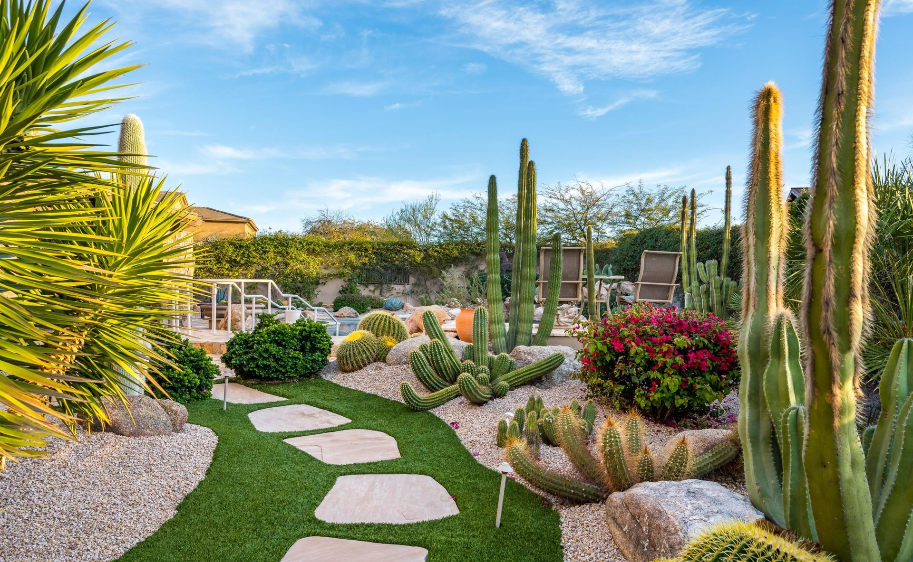

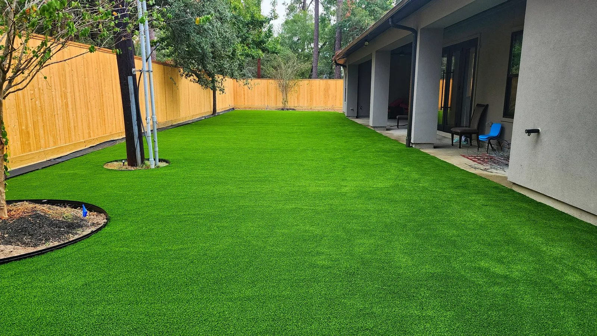
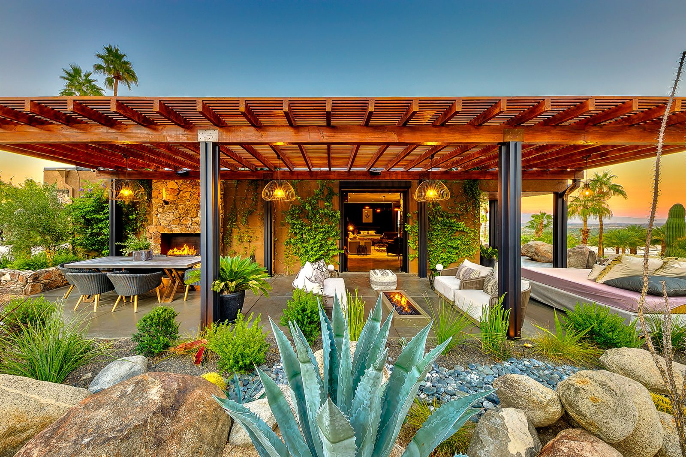
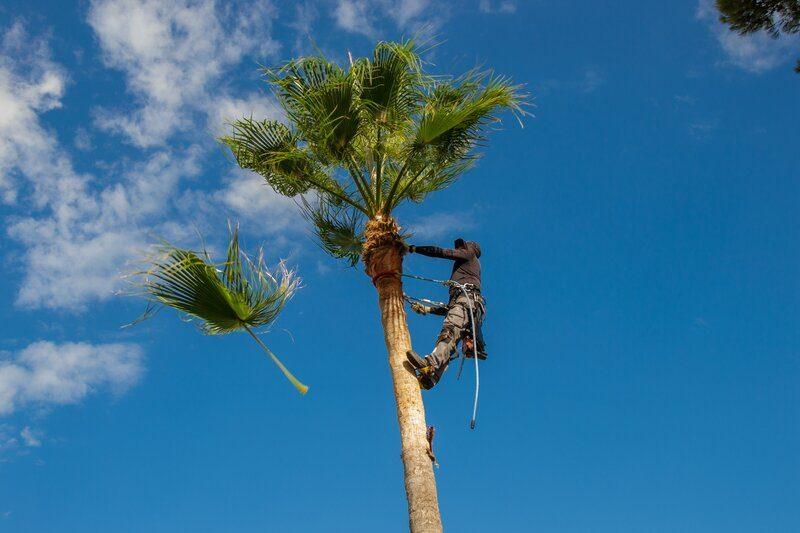
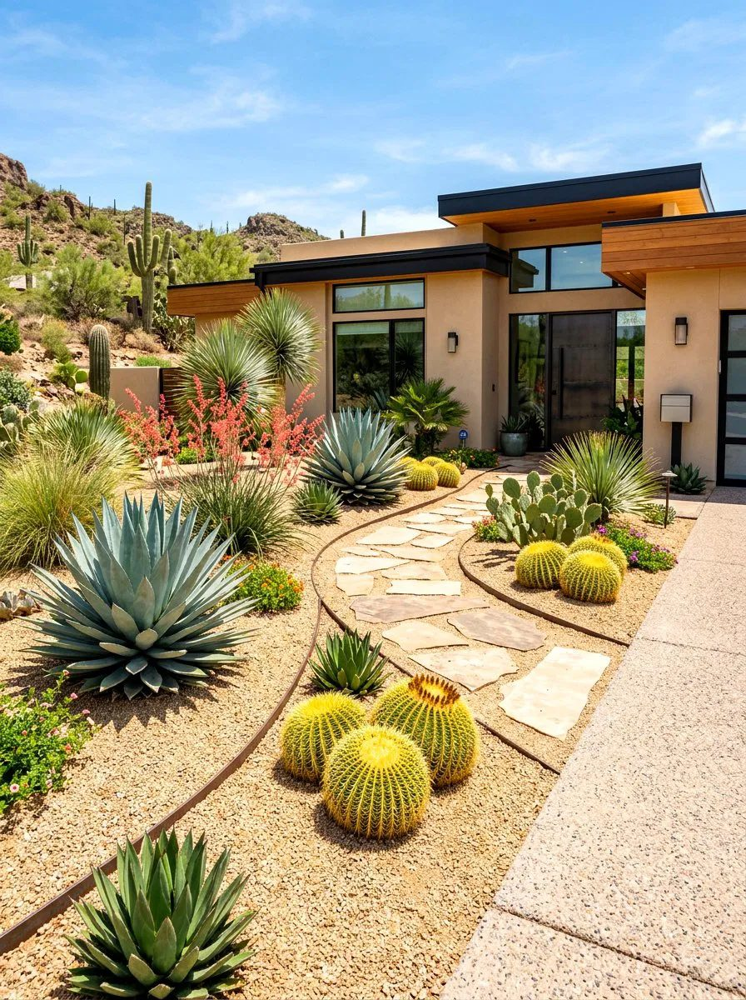
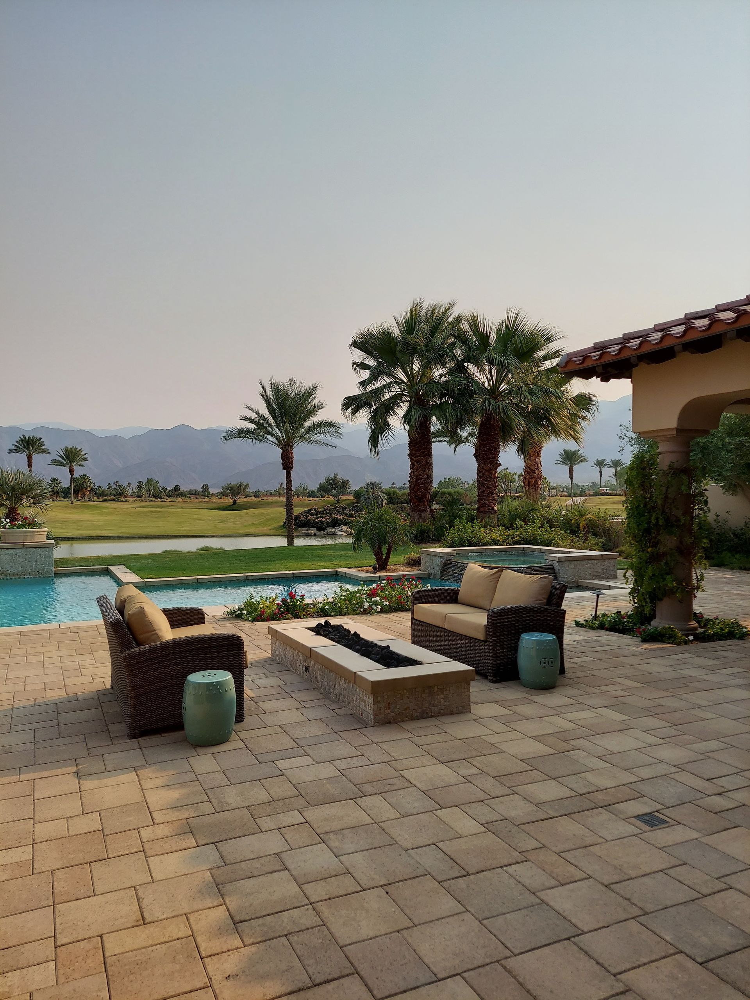
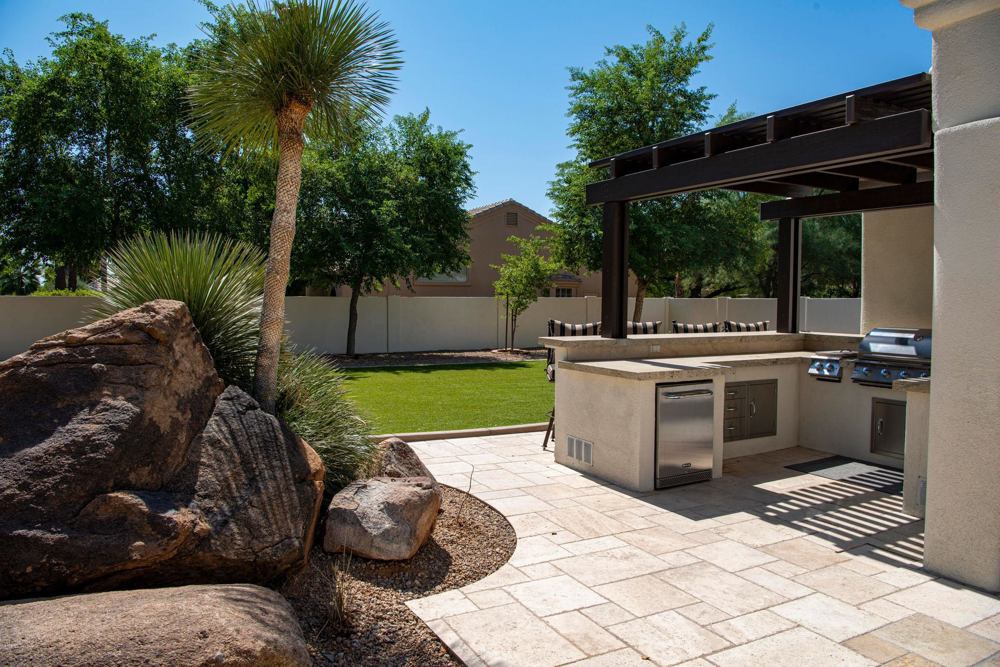
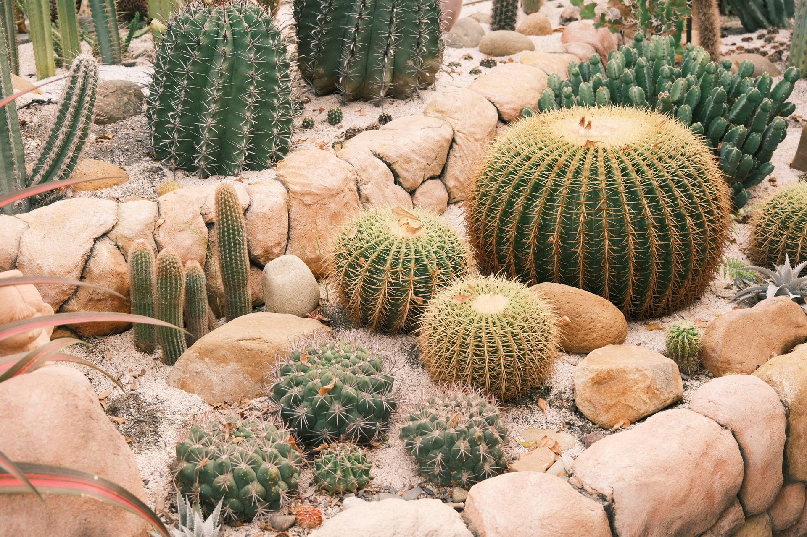
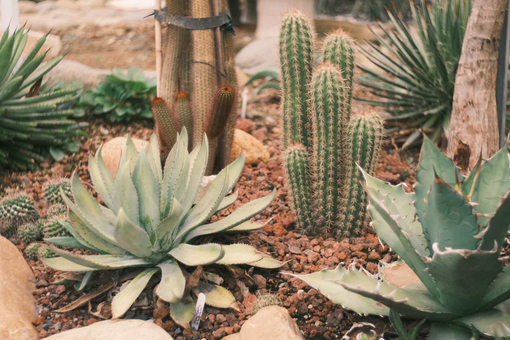
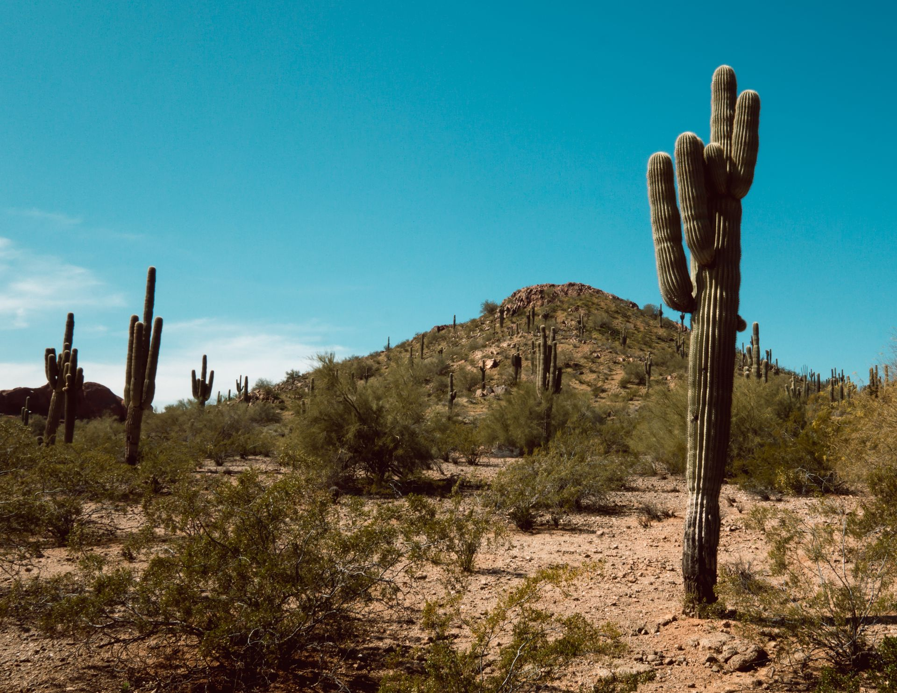
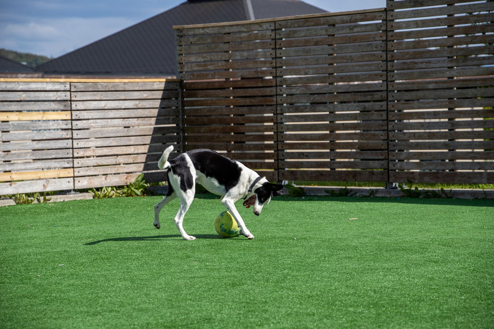
Picture your yard here
The first step is a free visit and an honest plan.